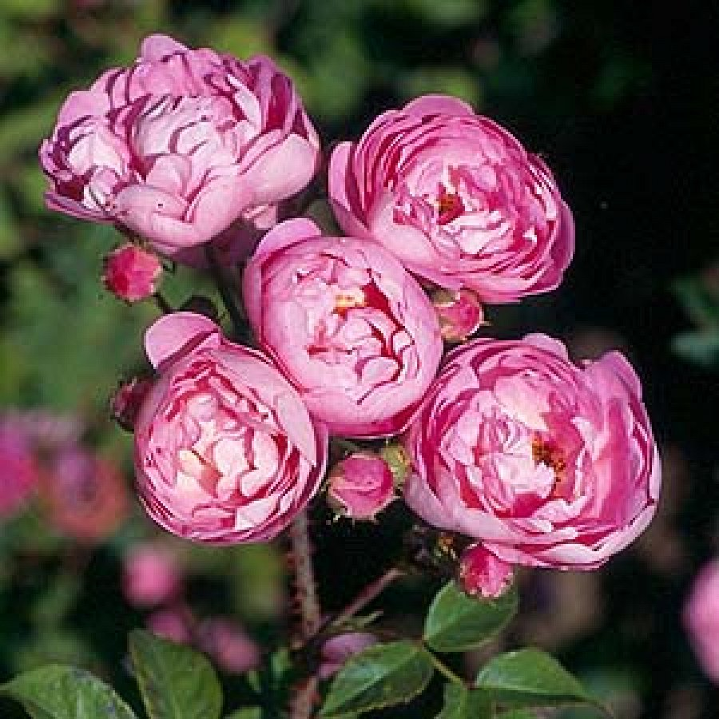
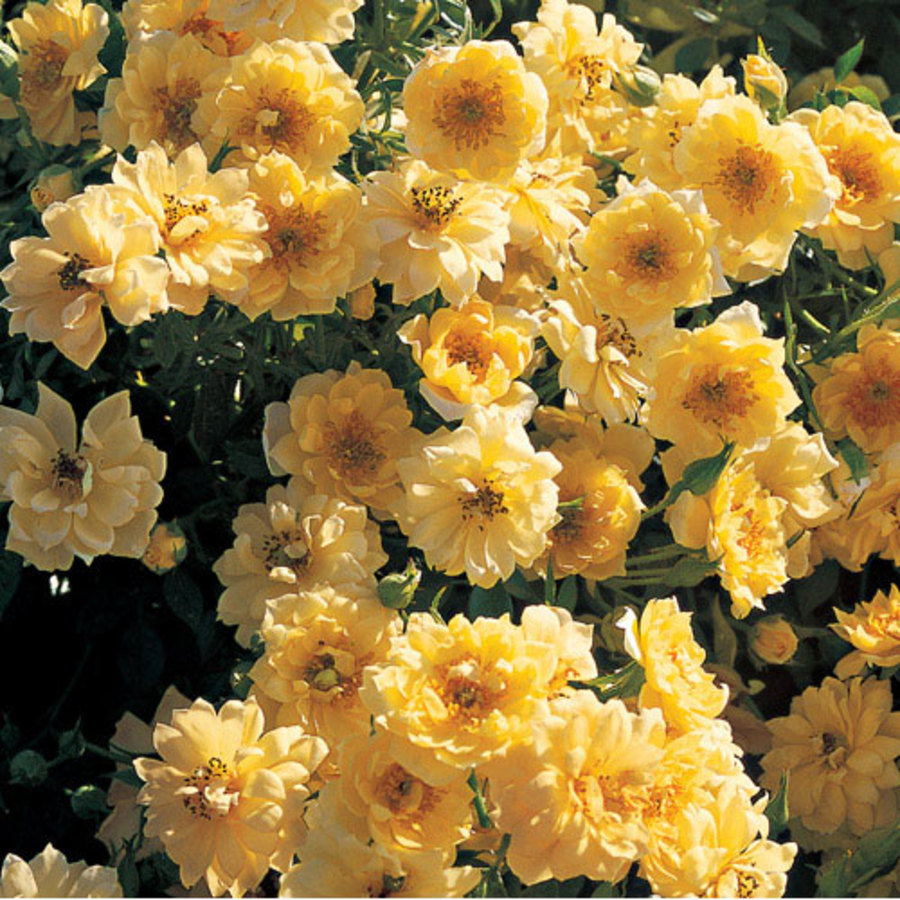

Groundcover Roses
Tweet Follow @111iamtestGround cover roses come in a variety of forms but they share the characteristics of long spreading branches which spread over the ground rather than growing upright. Most are repeat flowering and have little or no scent. Most of the growth occurs from the base of the plants. Ground cover roses look good at the front of a bed or draped over the edge of low walls. They require the same treatment as other roses. Pruning consists of keeping the plant to shape and occasionally pruning the centre of the plant to let air circulate.

Raubritter
This groundcover rose was hybridized by Kordes in 1936. It reaches 3 to 5 feet in height. It is a unique rose with large clusters of very cupped flowers on a sprawling bush, forming a low mound. It produces beautiful, fully double, old-fashioned cupped blooms of a bright and cherry-pink, 17 to 25 petals each. The rose possesses a slight fragrance. Raubritter is very free flowering, and it could be used for trailing over banks or a low wall.

Yellow Ribbons
This groundcover rose come recently from England. It reaches 1 to 2 feet in height. It has glossy, dark green foliage. It produces unusual deep yellow hues and light yellow to near white blooms, 20 to 25 petals each. It posesses light fresh fragrance. This rose is extremely lush and luminous, crowding out weeds and lighting up the landscape. It is an outstanding disease-resistant rose with striking non-stop bloom clusters.